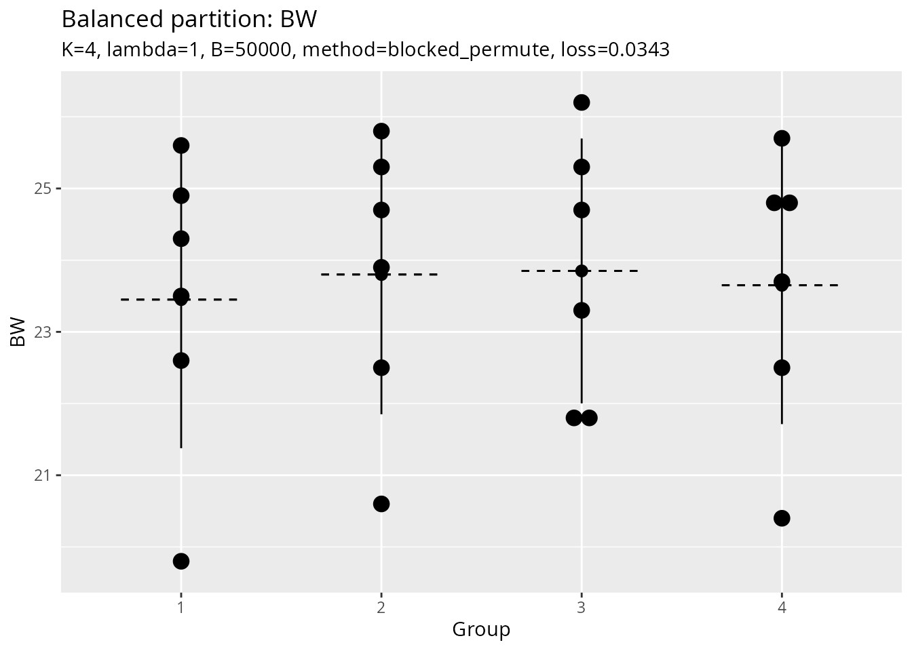

The balanced_partition() function partitions samples
into balanced groups while minimizing variance in group means and
standard deviations. This is useful for creating balanced experimental
groups, cross-validation folds, or training/test splits.
Overview
The partitioning algorithm minimizes:
where:
Gini(group_means)measures inequality in group meansGini(group_SDs)measures inequality in group standard deviationslambdacontrols the trade-off between balancing means vs. SDs
Basic Usage
Simple partition
library(Rtoolset)
# Load external data
data_file <- system.file("extdata", "8988T.csv", package = "Rtoolset")
data <- read.csv(data_file)
head(data)
#> NO. L W BW
#> 1 221 8.8 7.7 19.8
#> 2 222 10.4 8.1 21.8
#> 3 223 9.2 8.4 20.6
#> 4 224 8.2 7.2 21.8
#> 5 225 9.2 8.1 20.4
#> 6 226 8.3 6.8 24.9
# Partition into 4 balanced groups based on BW (body weight)
result <- balanced_partition(
data = data,
score_col = "BW",
id_col = "NO.",
K = 4
)
# View the assignment
head(result$assignment)
#> sample_id group score
#> 3 223 1 20.6
#> 9 231 1 22.5
#> 13 236 1 25.8
#> 15 238 1 24.7
#> 17 241 1 23.7
#> 18 242 1 25.3With Custom Group Sizes
# Specify exact group sizes
result <- balanced_partition(
data = data,
score_col = "BW",
id_col = "NO.",
group_sizes = c(6, 6, 6, 6) # Must sum to the total number of samples
)Advanced Options
Adjusting the Balance Trade-off
The lambda parameter controls how much weight to put on
balancing standard deviations:
# Emphasize mean balance (default lambda = 1)
result1 <- balanced_partition(
data = data,
score_col = "BW",
K = 4,
lambda = 0.5 # Less weight on SD balance
)
# Emphasize SD balance
result2 <- balanced_partition(
data = data,
score_col = "BW",
K = 4,
lambda = 2.0 # More weight on SD balance
)Partition Methods
Two methods are available:
# Blocked permutation (default, faster for large datasets)
result1 <- balanced_partition(
data = data,
score_col = "BW",
K = 4,
method = "blocked_permute"
)
# Random assignment (more thorough search)
result2 <- balanced_partition(
data = data,
score_col = "BW",
K = 4,
method = "random_assign",
B = 10000 # More iterations for better results
)Output Options
Save plots and CSV files to a directory:
result <- balanced_partition(
data = data,
score_col = "BW",
id_col = "NO.",
K = 4,
output_plot = TRUE, # Generate visualization
output_csv = FALSE, # Set to TRUE to save CSV file
output_dir = NULL, # Set to directory path to save files
file_prefix = "partition" # File prefix
)Understanding the Results
The function returns a list with several components:
result <- balanced_partition(data, score_col = "BW", K = 4, output_plot = TRUE)
# Assignment: which group each sample belongs to
result$assignment
#> sample_id group score
#> 1 1 1 19.8
#> 6 6 1 24.9
#> 10 10 1 24.3
#> 12 12 1 25.6
#> 21 21 1 22.6
#> 23 23 1 23.5
#> 3 3 2 20.6
#> 7 7 2 25.3
#> 13 13 2 25.8
#> 16 16 2 24.7
#> 19 19 2 23.9
#> 20 20 2 22.5
#> 2 2 3 21.8
#> 4 4 3 21.8
#> 11 11 3 23.3
#> 15 15 3 24.7
#> 18 18 3 25.3
#> 22 22 3 26.2
#> 5 5 4 20.4
#> 8 8 4 24.7
#> 9 9 4 22.5
#> 14 14 4 25.7
#> 17 17 4 23.7
#> 24 24 4 24.9
# Group statistics: mean, SD, and n for each group
result$group_stats
#> group score.n score.mean score.sd
#> 1 1 6.000000 23.450000 2.073403
#> 2 2 6.000000 23.800000 1.949359
#> 3 3 6.000000 23.850000 1.846889
#> 4 4 6.000000 23.650000 1.936750
# Loss value: lower is better
result$loss
#> [1] 0.03430415
# Group sizes used
result$group_sizes
#> [1] 6 6 6 6
# Plot object (if output_plot = TRUE)
result$plot
#> Bin width defaults to 1/30 of the range of the data. Pick better value with
#> `binwidth`.
Use Cases
1. Experimental Design
Create balanced treatment groups:
# Create 4 balanced treatment groups using body weight
groups <- balanced_partition(
data = data,
score_col = "BW",
id_col = "NO.",
K = 4,
output_plot = TRUE
)2. Data Splitting for Train/Test
Create balanced splits for cross-validation or train/test sets:
# Cross-validation: Create 5-fold CV with balanced groups
cv_folds <- balanced_partition(
data = data,
score_col = "BW",
K = 5
)
# Use the groups for cross-validation
for (fold in 1:5) {
test_indices <- which(cv_folds$assignment$group == fold)
train_indices <- which(cv_folds$assignment$group != fold)
# ... perform CV ...
}
# Training/Test Split: 80/20 split (approximately 19 and 5 samples)
split <- balanced_partition(
data = data,
score_col = "BW",
group_sizes = c(19, 5)
)
train_data <- data[split$assignment$group == 1, ]
test_data <- data[split$assignment$group == 2, ]Tips and Best Practices
- Data Quality: Ensure your score column has no missing values
- Group Sizes: For best results, groups should be roughly equal in size
-
Lambda Tuning: Start with
lambda = 1, adjust based on your needs -
Reproducibility: Use
seedparameter for reproducible results -
Visualization: Always check
output_plot = TRUEto verify balance
Algorithm Details
The core algorithm (balance_partition_core) uses a
random search approach:
- Generate candidate partitions using the selected method
- Evaluate each partition using the Gini-based loss function
- Iterate through candidates and return the partition with the lowest loss
The number of candidates (B) can be increased for better
results at the cost of computation time.
See Also
- Function reference:
?balanced_partition,?balance_partition_core